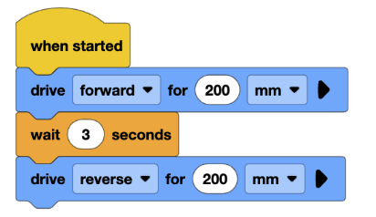

Lesson 5: Wait and Timing
Lesson Objectives
- Learn how the wait block works in VEXcode
- Use wait timing to control the pause between robot actions
Lesson Overview
In this lesson, students will learn how to use timed pauses in their programs using the “wait” block
Materials Needed
- Computers (1 per group)
- Basebots
- VEXcode IQ website
- Notebooks for each student
Lesson Procedure
Getting Started
- Start a class discussion using the prompts below. Establish the real-world connection of using timed actions. Then, introduce them to the wait block in VEXcode found in the Logic section. Connect the real-world connection from before to the wait block, and explain how the wait block will pause the program for a number of seconds before continuing.
- Discussion Prompts:
- Imagine you’re trying to make your robot do a dance. It would move forward, spin, wait a second, and then spin again. What happens if it doesn’t wait in the dance?
- Where in real life do you think timed actions are important?
Monitoring Progress
- Allow the students to go through a series of tasks to increase their familiarity with the wait block
- Task 1:
- Ask the students to create a program where the bot will drive forward 200mm, wait 3 seconds, and drive backward 200mm. The program should look similar to this:

- Task 2
- Now we are going to include turning. Using the logic from before, ask the students to create a program that makes the bot move in an L shape, starting at the top of the L and ending at the other end of the L. Remind the students to use wait blocks between each movement.
- The code should be something like :
- Drive forward for (x) mm
- Wait (x) seconds
- Turn left/right for (x) degrees
- Wait (x) seconds
- Drive forward for (x) mm
Wrapping Up
- Discussion questions:
- What are the benefits of the “wait” block? What happens to the program without it?
- What challenges did you have with the program before adding the “wait” block? How did the “wait” block solve those problems?
Assessment
- Students should know how and when to use the “wait” block
Preparation for next class
The next class will introduce sensors, so make sure no sensors are missing from the kits.